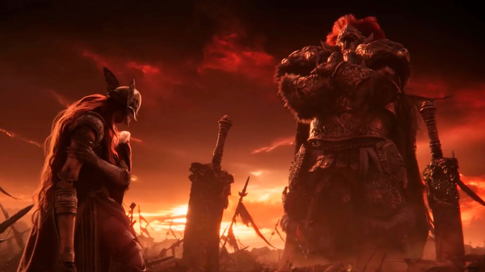

¿Qué son los jefes?
Los jefes en Elden Ring son enemigos extremadamente poderosos que representan los desafíos más intensos del juego. Su derrota otorga recompensas significativas y es esencial para avanzar.
Desafíos épicos
- Margit, el Augurio Caído: Primer gran jefe que desafía al jugador en la entrada al Castillo de Velo Tormentoso.
- Radahn, Azote de las Estrellas: Un semidiós con poder colosal, protagonista de un evento masivo dentro del juego.
- Malenia, Espada de Miquella: Considerada uno de los jefes más difíciles. Su combate es rápido, letal y con regeneración de salud.
- Godrick el Injertado: Un semidiós que absorbe partes de otros seres. Jefe del Castillo Velo Tormentoso.
Además, hay jefes opcionales como Astel, el Vacío Natural, o Rennala, Reina de la Luna Llena, quienes añaden profundidad al lore y variedad al combate.
Jefes opcionales y secretos
Entre los jefes opcionales más destacados se encuentra Astel, un ser interestelar con forma de estrella carnívora, y Mohg, Señor de la Sangre, quien busca instaurar una nueva dinastía bajo el caos. Estos jefes amplían el universo del juego y ofrecen desafíos brutales.
Estilos de combate y diseño
Los jefes combinan diseño artístico brutal, mecánicas complejas y narrativa simbólica. Algunos, como Radahn, son jinetes gigantes con ataques cósmicos, mientras que otros como Malenia destacan por su velocidad y estética letal.
Multijugador y convocatorias
Los jugadores pueden invocar ayuda de NPCs o de otros jugadores reales usando señales doradas. Esto es vital para jefes opcionales con mecánicas agresivas o transformaciones inesperadas.